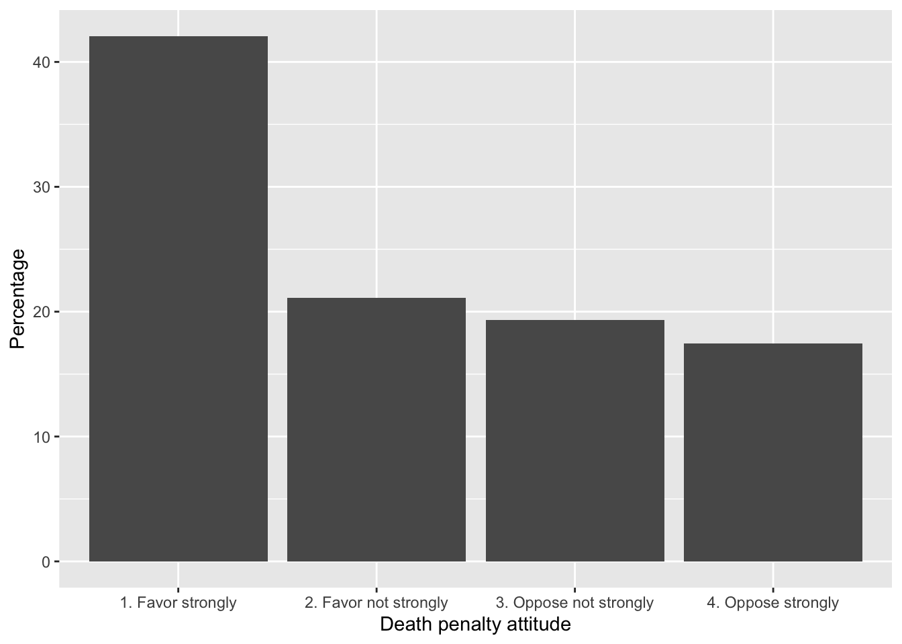
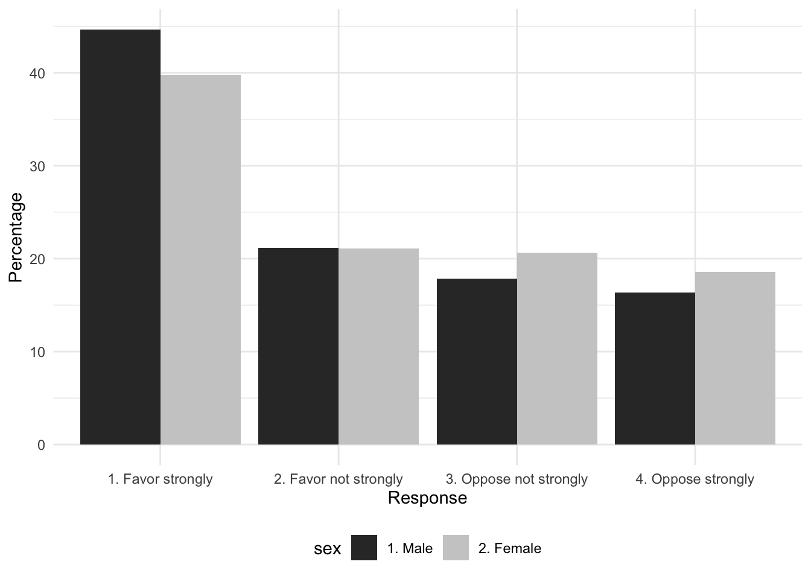
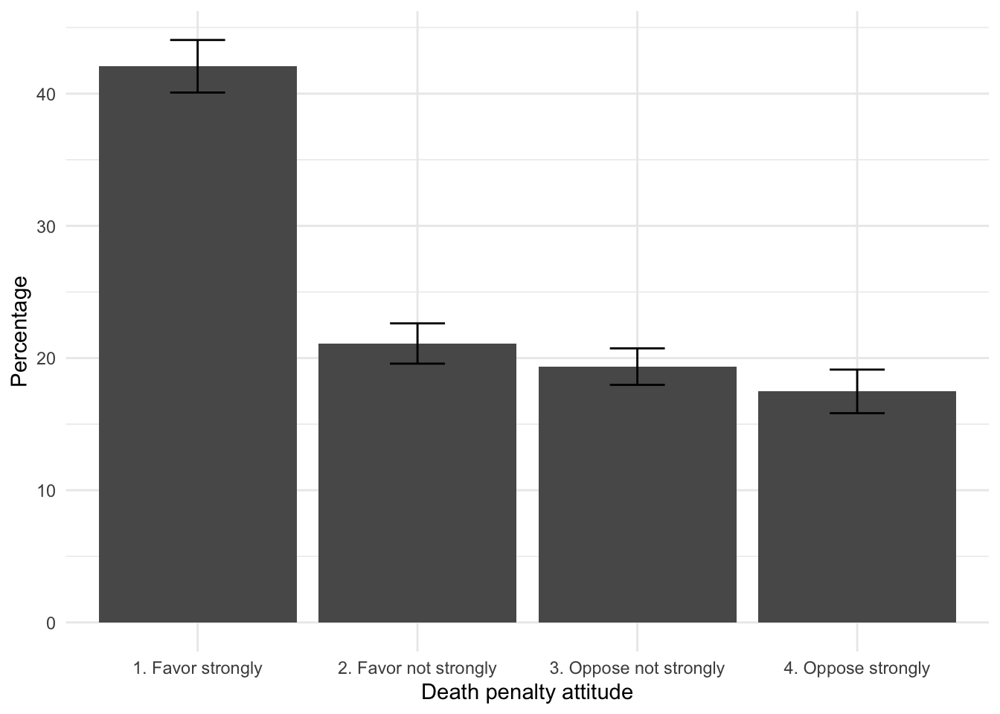
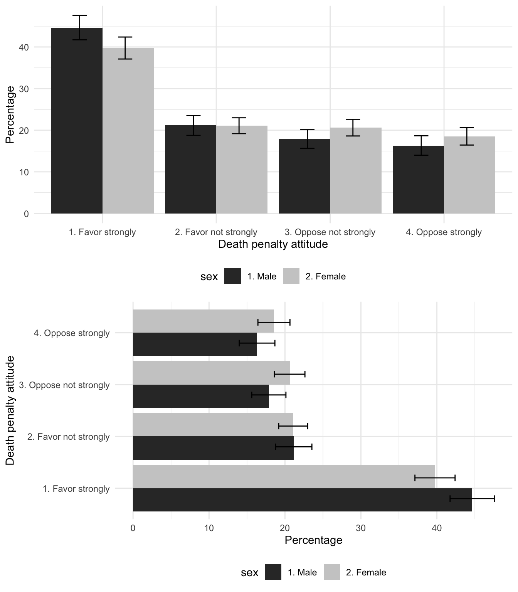
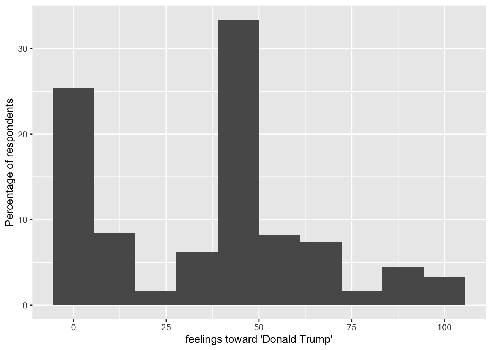

Chapter 9 Analyzing Election Studies
Chapter 9 introduces methods for analyzing election polls, such as the 2020 American National Election Studies (ANES) survey.
Learning objectives and chapter resources
By the end of this chapter, you should be able to: (1) import the American National Election Studies (ANES) survey and explain the structure of the data; (2) adjust the ANES data for the survey sample design; (3) create and interpret tables, descriptive statistics, and cross-tabulations (contingency tables); (4) interpret inferential tests of independence and confidence intervals on means and proportions; (5) visualize tabulations and cross-tabulations through bar charts with error bars. The material in the chapter requires the survey and (Lumley 2021) kableExtra (Zhu 2024) packages, which will need to be installed, as well as packages from the tidyverse (Wickham 2023b) along with a pre-installed package, knitr (Xie 2023b). The dataset required for chapter exercises is the anes_20 dataframe in the R Workspace anes 2020 survey data.rdata available from https://faculty.gvsu.edu/kilburnw/inpolr.html.
9.1 Election polling
One of the defining moments in modern American presidential campaigns occurred in 1948, on election day at the end of a campaign that would send incumbent President Truman back to the White House.In that autumn, Truman’s campaign was declared all but dead, both by pundits and especially pollsters, based on the relatively new polls conducted by George Gallup and Elmo Roper, who both predicted confidently that Truman would lose (Erikson and Tedin 2015). So confident were the pundits that on November 4, the Chicago Daily Tribune ran an early edition with a banner headline declaring “DEWEY DEFEATS TRUMAN”. Famously, Truman was photographed holding it aloft in a victory celebration that day (Jones 2020). Defying the polls, Truman won a majority of Electoral College votes. In the popular vote, it was a relatively close 49.5 percent for Democrat Truman, and 45.1 percent for Republican Dewey (Woolley and Peters 2024).
Yet if pundits had access to a groundbreaking polling initiative launched that year, they might have been much more cautious in predicting a Dewey victory. In 1948, the ANES conducted its inaugural survey using an innovating probability based sampling method, known today as ‘area probability cluster sampling’. The ANES developed a more representative sample than the quota sampling methods used at the time by Gallup and Roper. The two principal investigators, social scientists Angus Campbell and Robert L. Kahn fielded a survey in which 662 individuals, representative of the adult US population, were interviewed both before and after the election; the survey respondents were asked a series of questions about the upcoming election, policy issues, and their own demographic background (Campbell and Kahn 1948).
In the pre-election survey, respondents were asked whether they intended to vote in the presidential election and the party of their vote choice. Among likely voters, 47.09 percent chose the Democratic party and 49.24 percent Republican. The survey showed Dewey with more support than Truman, well within the survey’s 3.8 percent margin of error, making the election too close to call. Given the candidate centered focus of American politics, even as early as 1948 a survey question asking about party support would have been a fuzzy indicator of vote choice. In the post-election survey, respondents were asked for which candidate they voted back in November. Among likely voters, 50.2 percent of respondents reported voting for Truman and 42.2 percent for Dewey. While under-counting Dewey’s support, support for Truman differed by less than a percentage point, just barely exceeding the margin of error. The ANES could have called the election correctly.
Conducted in each presidential election since 1948, the ANES has grown to become the preeminent election survey in the United States. In Chapter 9 we learn to analyze data from the 2020 ANES. The chapter does assume some prior familiarity with introductory statistics. We will (1) tabulate survey responses; (2) construct cross-tabulations (contingency tables), a fundamental tool for exploring associations between two categorical measures; and (3) calculate sample means and proportions. For each of these, we will account for likely ranges of population-level characteristics given the ANES sample, and test the sample against hypothetical population values. Finally we will create data visualizations commonly used in the study of public opinion. Prior to analyzing the 2020 ANES data, however, we first need to become familiar with basic aspects of national election poll sampling.
Sampling a national electorate
A fundamental distinction in survey sampling is the difference between a simple versus a complex random sample. In a simple random sample of the U.S. electorate, every member of the population (e.g., registered voters or voting age citizens) would have a known and equal probability of selection. For national election polling, implementing a true simple random sample is nearly impossible in practice.
To make national samples feasible, cost-effective, and representative, researchers rely on complex sampling methods. These methods usually involve three key components: (1) sampling within strata, (2) clustering interviews, and (3) applying observation weights. The process begins by dividing the country into strata — geographic or demographic regions — ensuring broad national coverage. Within each stratum, interviews are often clustered in specific areas, which reduces costs but increases sampling uncertainty because individuals within clusters tend to be more similar to one another. This clustering effect necessitates adjustments to standard errors during analysis to account for the inflated uncertainty. Finally, observation weights are applied to correct for unequal probabilities of selection and to address over or under representation of certain groups in the sample (Groves et al. 2011; Weisberg, Krosnick, and Bowen 1996).
Analyzing election survey data almost always requires incorporating strata, clustering, and individual weights into the analysis in order to accurately tabulate responses from the sample and correctly infer population level characteristics. After loading the 2020 ANES data, we will explore its structure, key distinctions in data storage types, and introduce functions from the survey package to account for the complex sample characteristics and analyze the survey responses.
The 2020 ANES survey
The 2020 ANES survey dataset is stored within an R Workspace, anes_2020_survey_data.rdata.
After loading, the dataframe anes_20 appears in the Environment pane. Rows are survey respondents, and the columns record the different alpha-numeric variables. The A presents a brief ANES codebook explaining the data. Nearly all of the columns refer to different survey questions. In the Console, enter names(anes_20) to list the names of each column. For example, the sixth variable V201005. In the A codebook following the name is a variable label, which explains that the subject matter of the question is “How often does [respondent] pay attention to politics and elections”. In the second section of the codebook the exact wording of the survey question is “How often do you pay attention to what’s going on in government and politics?”
While not accounting for the survey design, we can tabulate the contents of this variable with a simple table() function, specifying the name of the dataframe and the column following the $sign:
##
## 1. Always 2. Most of the time
## 1158 1863
## 3. About half the time 4. Some of the time
## 920 795
## 5. Never
## 47The results show the (unweighted) frequencies. For example, 1158 people out of the total sample selecting “Always”, which is labeled in the response scale as point 1 on a five-point scale ranging from “1. Always” to “5. Never”.
The variables in the survey are either factor or numeric storage types. Since the columns mostly record individual survey questions, the storage type reflects the survey response scale — whether responses are recorded as numeric scores or verbal response scales. Variable V201005 is a factor; enter str(anes_20$V201005) to observe the variable’s storage type. In the factor, numeric scores are placeholders for the verbally labeled responses. The summary() or table() responses will display the response categories and unweighted frequencies, such as summary(anes_20$V201005).
Variables stored in the numeric storage type are purely numeric scores without a verbal label attached, such as age or a feeling thermometer score. Variable V202162 records feelings toward labor unions. Entering str(anes_20$V202162) shows that it is stored as a numeric score num. Because the variable is recorded as numbers, summary() will report summary statistics:
## Min. 1st Qu. Median Mean 3rd Qu. Max.
## 0.0 50.0 60.0 58.7 70.0 100.0
## NA's
## 88As with any other numeric variable, the summary() function reports the five-number summary (min, max, median and 25th and 75th percentiles), along with the arithmetic mean and number of missing values (NA's). Because the factor storage type associates numeric scores with each verbal label, we could instruct R to treat the variable for political interest (V201005) as numeric, with the as.numeric() function wrapped around the name of the variable, as.numeric(anes_20$V201005):
## Min. 1st Qu. Median Mean 3rd Qu. Max.
## 1.00 2.00 2.00 2.31 3.00 5.00Treating the variable as numeric returns quantitative summary statistics, where the first ordered category in the response scale (“1. Always”) is assigned a value of 1 and the last category (“5. Never”) is assigned a value of 5. These numeric assignments are based on the order of the factor levels, not the labels themselves. The “Always” response is assigned a score of 1 because it is the first factor label, not because it is explicitly labeled as “1.” In survey data analysis, raw survey responses and labels are often not immediately usable and typically require transformation. We will see examples of these transformations further below, after establishing the complex survey design.
9.2 Specifying a survey sample design
The standard package for analyzing complex sample data in R is survey (Lumley 2021). If needed, install the package install.packages("survey") and attach it:
To account for the complex survey design, analyses must adjust for the three key elements: strata, clusters, and weights. These elements are specified using the svydesign() function from the survey package. . Once the survey design is established, subsequent analysis functions automatically incorporate these adjustments, modifying observation frequencies and ensuring accurate measures of uncertainty, such as standard errors. For the 2020 ANES survey data, the sample design is specified as follows:
anes2020<-svydesign(data = anes_20, strata=~V200015d,
ids = ~V200015c, weights=~V200015b, nest=TRUE)The function has four main arguments to identify different parts of the design. The first is the identification of the dataset stored in the R environment, data=. The remaining arguments specify columns within the dataframe, each associated with a distinct component of the survey design.
The package uses a ‘tilde’ ~ symbol to indicate a specific variable (usually found next to the number 1 on a keyboard). The second argument, strata=~, identifies the strata in the dataset. Third, ids=~ specifies the interview clusters within the strata, and fourth, weights=~ assigns the appropriate survey weights. In some cases, such as this example, the argument nest=TRUE is also required to indicate that the clusters are nested.
The object anes2020 represents the survey design. When performing analysis with functions from the survey package, the survey design object (assigned the contents of svydesign()) is specified as an argument instead of the dataset itself. We will explore how to use these functions for analyzing nominal and ordinal variables (saved as factor variables), as well as interval/ratio variables (numeric), focusing on tabulations, means, and proportions.
9.3 Tabulating and cross-tabulating survey measures
The svytable() function tabulates the weighted frequencies for a variable, such as V201005. Two arguments are required: the variable to tabulate and the survey design object, svytable(~V201005, design = anes2020). The ~ symbol is essential, as it indicates that V201005 is a column within the anes2020 survey dataset. Without it, the function will not interpret the variable correctly.
The results display weighted tabulations, where each observation’s contribution is scaled by its survey weight. Basically, weights adjust the influence of each observation by multiplying its frequency by its weight, ensuring the tabulations reflect population estimates rather than the sample distribution. To round the tabulations to the nearest integer, add the argument round=TRUE; without it, frequencies will include decimals:
## V201005
## 1. Always 2. Most of the time
## 1004 1713
## 3. About half the time 4. Some of the time
## 986 1027
## 5. Never
## 54The design = description can be omitted. Compare these weighted tabulations to the previously unweighted tabulations from table(). The difference is not trivial, substantially affecting proportion or percentage calculations. Placing the prop.table() function around the tabulation will yield proportions:
## V201005
## 1. Always 2. Most of the time
## 0.20987 0.35807
## 3. About half the time 4. Some of the time
## 0.20610 0.21467
## 5. Never
## 0.01129Then multiplying the proportions by 100, percentages:
## V201005
## 1. Always 2. Most of the time
## 20.987 35.807
## 3. About half the time 4. Some of the time
## 20.610 21.467
## 5. Never
## 1.129For example, from the tabulation, we observe that a narrow majority of about 57 percent of US citizens 18 or older report paying attention to politics “always” or “most of the time”.
Formatting tabulations
For proportions or percentages in a print-ready format, we can use the prop.table() function alongside knitr::kable() from the knitr (Xie 2023b) package. Tables in this format work especially well for inclusion in RMarkdown documents knitted to Word or PDF format.
To store these percentages for further formatting, we assign the output to an object, such as table1:
Next, we use knitr::kable() to format the table with reduced decimal places and an appropriate caption. The package is preinstalled in RStudio; without needing to use library(), we use it by identifying the package and function separated by two colons: knitr::kable(). The result is a table formatted as in Table 9.1:
knitr::kable(table1, digits = 2,
col.names = c("Attention to Politics", "Percentage"),
caption = "Survey respondent attention
paid to politics, 2020 ANES.")| Attention to Politics | Percentage |
|---|---|
| 1. Always | 20.99 |
| 2. Most of the time | 35.81 |
| 3. About half the time | 20.61 |
| 4. Some of the time | 21.47 |
| 5. Never | 1.13 |
The caption= and number of digits= are optional arguments. The argument col.names=() changes the default column names from table1 in Table 9.1.
Cross-tabulation (contingency) tables
A cross-tabulation table displays the frequency distribution of two categorical variables, how frequencies on one categorical variable covary with the other. For example, pollsters often include cross-tabulations as part of a press release accompanying a poll, displaying how vote choice varies over demographic characteristics. Cross-tabulations are fundamental to bivariate hypothesis testing, given the identification of one variable as independent and the other dependent. Researchers compare proportions or percentages within levels of an independent variable, to observe variation in levels of a dependent variable.
For example, tabulating how frequency of attention to politics varies by sex (variable V201600) creates a contingency table. From svytable() add an additional variable with a plus (+) sign in front of the second variable:
## V201600
## V201005 -9. Refused 1. Male 2. Female
## 1. Always 6 568 429
## 2. Most of the time 6 856 851
## 3. About half the time 7 384 594
## 4. Some of the time 4 454 569
## 5. Never 0 28 26The result is a tabulation of frequencies of political interest (as the row variable) by sex (on the column). Notice that in V201600 (svytable(~ V201600, anes2020, round=TRUE)), 24 respondents refused to answer the question, and are marked by the standard “Refused” code of -9 in the ANES. For respondent sex, the reason why 24 people refused is beyond the scope of the ANES, and is too small from which to generalize. So typically in an analysis we would convert the “Refused” respondents to a missing value (NA) in the dataset — then construct a new table of respondent sex by political attention.
Since the frequencies are from a sample, percentages or proportions interest us more than raw frequencies. Before creating a table of percentages, first we will observe how to remove responses such as “Refused” from a table, by creating a transformed survey measure of respondent sex as a new column in the anes_20 dataframe.
Creating and recoding a new survey measure
This process of creating new variables in the data frame and transforming the response scales in survey data is often referred to as “recoding”. There are at least a few reasons why recoding could be useful: (1) dropping “Don’t know” or “Refused” responses; (2) reversing scale directions such as “1. Always” to “5. Never”; (3) categorizing a measure such as age into groups; or (4) simply creating new alphanumeric variables with memorable names.
For V201600, we will clone a copy of it into a new variable sex, then convert to a missing value NA the respondents recorded as -9. Refused. Then in a revised table, contrast sex with variation in political attention. Various tidyverse functions facilitate recoding, which starts with creating the variable sex as a copy of V201600:
Enter names(anes_20) to observe sex now appears at the end of the dataset. To recode factor labels, we use fct_recode(). We specify a new label for each old one we want to replace: the order being ‘new label = old label’. Labels are specified in quotes, although for sex we want to recode the “Refused” label to NULL or NA, two system level values for missing data.
Below a newly recoded sex variable is created and recoded from the existing V201600. The second line creates the new variable with mutate(sex = ), in which fct_recode(V201600, NULL = "-9. Refused") specifies the recoded categories:
The mutate() function could have also been expressed as mutate(sex = na_if(V201600,"-9. Refused")): the na_if() function assigns a missing value NA for values listed in the second argument. Either creates the newly recoded sex variable.
One important step in analyzing data with the survey package is that each time a new variable is created, the svydesign() function must be run again, so that the names of the new variables are stored within the svydesign() object.
anes2020<-svydesign(data = anes_20, ids = ~V200015c,
strata=~V200015d, weights=~V200015b, nest=TRUE)Then svytable() displays the cross-tabulation:
## sex
## V201005 1. Male 2. Female
## 1. Always 568 429
## 2. Most of the time 856 851
## 3. About half the time 384 594
## 4. Some of the time 454 569
## 5. Never 28 26Column and row proportions in a contingency table
The function prop.table() wrapped around the svytable() creates a table of proportions. Using prop.table() with argument margin=1 calculates proportions summing to one along the rows (row proportions). Setting margin=2 calculates proportions summing to one along the columns (column proportions).
## sex
## V201005 1. Male 2. Female
## 1. Always 0.24803 0.17375
## 2. Most of the time 0.37380 0.34467
## 3. About half the time 0.16769 0.24058
## 4. Some of the time 0.19825 0.23046
## 5. Never 0.01223 0.01053As column proportions, summing down the column of entries under “1. Male” and “2. Female”, the totals are 1. Column proportions reflect the logic of a particular conditional probability. For the column proportions, that probability is: given someone’s sex, what is the probability of reporting a particular level of attentiveness to politics? If the hypothesis is, for example, that females are more likely than males to report paying a great deal of attention to politics, then this is the probability of interest and an analysis table should include column rather than row proportions.
From the column proportions, we can observe, for example, that given male sex the probability of reporting “Always” paying attention is about .25 compared to female .17. About 25 percent of males report “Always” paying attention, compared to 17 percent of Females. With sex as the independent variable \(x\), and attention to politics as the dependent variable \(y\), the column proportions are the quantities needed to assess how categories on \(y\) vary given values of \(x\) — for example, how does attention vary, given that someone is male? Female? Without specifying a margin, prop.table() calculates total proportions — the frequencies within each category of column and row given the total frequencies.
To create percentages, the contents of prop.table() can be saved to a table object, multiplied by 100 within knitr::kable(). Table 9.2 displays a table formatted in this style:
knitr::kable(table2*100, digits = 2,caption = "Survey respondent sex by
attention paid to politics, column percentages 2020 ANES.")| 1. Male | 2. Female | |
|---|---|---|
| 1. Always | 24.80 | 17.38 |
| 2. Most of the time | 37.38 | 34.47 |
| 3. About half the time | 16.77 | 24.06 |
| 4. Some of the time | 19.83 | 23.05 |
| 5. Never | 1.22 | 1.05 |
From Table 9.2, we could conclude that respondents identifying as male rather than female identifiers are more likely to report paying attention always (24.8 percent compared to 17.38 percent) or most of the time (37.38 percent compared to 34.47 percent).
In cross-tabulations, the rule of thumb to remember is ‘always percent-agize on the independent variable’ — to calculate proportions (or percentages) that sum to 1 within each category of the independent variable. Typically researchers add marginal totals (row and column total proportions or percentages) along with frequencies in the same table. The frequencies and proportions or percentages from prop.table() can be combined into one table within word processing software.
9.4 Test of independence for contingency tables
The cross-tabulation of political interest by sex showed an association, yet a separate question is whether the association observed within the sample table is large enough to reject the null hypothesis of no relationship within the population. The standard Chi-squared test of independence tests this null hypothesis. The test compares the observed frequencies within the table to a hypothetical set of expected frequencies under the assumption of independence (no relationship) between the variables. The greater the difference between the observed frequencies from expected, the greater the Chi-squared test statistic, and the greater the evidence against the null hypothesis.
The adjusted Chi-squared test for the complex survey design of the ANES reports an F-statistic (the ratio of two Chi-squared distributions) and an associated p-value for the probability of observing a test statistics that large (or larger) if the null hypothesis of independence is true. Given a chosen ‘alpha level’, or threshold of the p-value for determining statistical significance and rejecting the null. The standard alpha level (\(\alpha = .05\)) of .05, means that if the we observe a \(p < .05\) we reject the null hypothesis.
To test the null of no relationship between political attention and sex in the ANES population, the function is svychisq() in place of svytable():
##
## Pearson's X^2: Rao & Scott adjustment
##
## data: svychisq(~V201005 + sex, anes2020)
## F = 8.4, ndf = 3.7, ddf = 187.2, p-value = 5e-06The results show a statistically significant association between interest and sex. The test statistic has an F-value of 8.4 (degrees of freedom \(\frac{3.7}{187.2}\)), with a p-value of 0.000005, well below a significance threshold of 0.05. From the p-value we reject the null hypothesis of independence between interest and sex. The test result suggests that the observed relationship between interest and sex is much stronger than would be expected on the basis of chance and sampling error alone, so we can conclude that interest and sex are related within the sampled population. Note that the test does not measure the strength or direction of association; the test result would be the same, for example, if the categories in interest were scrambled.
Contingency tables controlling for a third factor
In a contingency table we could observe that two measures are related (a \(y\) covarying with \(x\)), but the possibility remains that the relationship is spurious — any observed association in the relationship between \(x\) and \(y\) could be the result of a third variable \(z\) that influences both. To test the extent to which the relationship within a contingency table persists when controlling for a third factor, we subset the data on values of the third factor and recalculate the contingency table. To demonstrate, we will cross-tabulate party identification by religious service attendance, then on levels of sex, to observe whether there is evidence — controlling for sex — that Democrats report less religiosity than Republicans. To do so, we will work through some useful variable recoding functions.
Recoding for a table of party identification by religiosity
The two relevant variables from the survey are V201228 for party identification, and for religious service attendance the variable attend, constructed from V201452 and V201453. First check the existing response labels in party identification, table(anes_20$V201228). Variable V201228 is stored as a factor; recoding functions from the forcats package (Wickham 2023a) in the tidyverse modify the factor levels. The recoding function below with fct_recode() assigns the “Refused”, “Don’t know”, and “No preference” respondents to the Independent category, while excluding the “Other party” respondents.
anes_20 <- anes_20 %>%
mutate(partyid = fct_recode(V201228,
"3. Independent" = "-9. Refused",
"3. Independent" = "-8. Don't know",
"3. Independent" = "0. No preference {VOL - video/phone only}",
NULL = "5. Other party {SPECIFY}"),
partyid = fct_relevel(partyid, "1. Democrat", "2. Republican",
"3. Independent"))The function fct_relevel() sets the order of the labels. Enter table(anes_20$partyid) and observe that after reassigning the respondents, only three categories remain tabulated: Democrat, Republican, and Independent.
Creating a measure that summarizes a survey respondent’s attendance at religious services requires combining responses from two different survey questions. First, respondents are asked whether they attend religious services at all:
##
## -9. Refused -8. Don't know 1. Yes
## 30 2 2266
## 2. No
## 2485Then if they respond “Yes”, they are asked how frequently:
##
## -9. Refused -8. Don't know
## 11 1
## 1. Every week 2. Almost every week
## 727 528
## 3. Once or twice a month 4. A few times a year
## 375 565
## 5. Never
## 59The two variables are combined into one through the case_when() function inside mutate(). The function is similar to filter(), in that case_when() evaluates whether a condition is true for each observation, and if so, assigns that observation a particular score in the new variable. For example in the third line below, case_when() evaluates whether observations V201452 == "2. No"; then for all observations where the responses for V201452 are recorded as “2. No”, the responses for attend are assigned “1. Never”. For each line, along the right-hand side after the tilde symbol ~ appears the resulting scale in attend, ranging from “1. Never” attend services to “5. Every week”.
anes_20<-anes_20 %>%
mutate(attend = case_when(
V201452 == "2. No" ~ "1. Never",
V201453 == "5. Never" ~ "1. Never",
V201453 == "4. A few times a year" ~ "2. A few times a year",
V201453 == "3. Once or twice a month" ~ "3. Once or twice a month",
V201453 == "2. Almost every week" ~ "4. Almost every week",
V201453 == "1. Every week" ~ "5. Every week"))The first condition matched in case_when() is from V201452, while the others are the variation in response scales from V201453. The result is a five-point attendance scale:
##
## 1. Never 2. A few times a year
## 2544 565
## 3. Once or twice a month 4. Almost every week
## 375 528
## 5. Every week
## 727A further change to the scale could be to combine the responses, “A few times a year” with “Once or twice a month”, so that respondents are arranged from “Never”, to infrequently (“A few times a year” or “Once or twice a month”) to near weekly and weekly:
anes_20 <-anes_20 %>%
mutate(attend = fct_recode(attend,
"2. few times a year, monthly" = "2. A few times a year",
"2. few times a year, monthly" = "3. Once or twice a month",
"3. almost every week" = "4. Almost every week",
"4. every week" = "5. Every week"))Once the measures are recoded, we respecify the survey design object anes2020 so that it accounts for the new variables partyid and attend:
anes2020<-svydesign(data = anes_20, ids = ~V200015c,
strata=~V200015d, weights=~V200015b, nest=TRUE)Then we can create the tables. The contingency table with (column) proportions to display the percentage of each attendance category identifying as Republican, Democrat, or Independent is prop.table(svytable(~partyid + attend, design=anes2020, round=TRUE), margin=2). Saving the table as table3, converting it to percentages and formatting with knitr::kable(), the result appears in Table 9.3.
library(kableExtra)
knitr::kable(table3*100, digits = 2,
caption = "Contingency table of party identification
by religious service attendance, column percentages, 2020 ANES.") %>%
kable_styling(full_width = FALSE, latex_options = c("scale_down"))
|
|
|
|
|
|---|---|---|---|---|
|
36.12 | 37.55 | 27.11 | 25.76 |
|
23.11 | 35.21 | 47.19 | 49.70 |
|
40.77 | 27.23 | 25.70 | 24.55 |
The code to generate a table similar to Table 9.3 could be as simple as knitr::kable(table3*100, digits = 2); the code above includes additional options to format the table on a printed page. Table 9.3 shows that of those “Never” attending services, 23 percent identify as Republican compared to 36 percent as Democrat, a 13 point difference. At the other end of the scale, about half of those attending services “every week” identify as Republican versus only about 26 percent as Democrat. Enter svychisq(~partyid + attend, design = anes2020) to observe a statistically significant F-statistic.
Yet given the possibility that these relationships break down when controlling for sex, we recreate the cross-tabulation on each value of the sex variable. In constructing control tables such as these, the goal is to test whether any observed relationship between the independent and dependent variable persists for each level of the control variable. If the relationship between party identification and religious service attendance appears at least somewhat null across levels of sex (1. Male and 2.Female), then this pattern would be evidence of spuriousness. Of course, it is unlikely that sex would be a source of spuriousness; it is much more likely that we would observe sex as an additive effect shifting party identification and religious attendance in a particular direction.
To construct the table, for the value of sex 1. Male, we subset the survey design object with subset(anes2020, sex== "1. Male") in place of the survey design object:
## attend
## partyid 1. Never 2. few times a year, monthly
## 1. Democrat 375 158
## 2. Republican 314 144
## 3. Independent 539 120
## attend
## partyid 3. almost every week 4. every week
## 1. Democrat 32 78
## 2. Republican 128 170
## 3. Independent 63 64The result is a “control table”, a tabulation of religious service attendance by party identification, controlling for gender. Creating a formatted table from knitr::kable() results in Table 9.5:
table4<-prop.table(svytable(~partyid + attend,
subset(anes2020, sex== "1. Male"), round=TRUE),
margin=2)A simple table without a caption would be knitr::kable(table4*100, digits = 2).
library(kableExtra)
knitr::kable(table4*100, digits = 2,
caption = "Party identification by religious
service attendance, column percentages, male respondents only.") %>%
kable_styling(full_width = FALSE, latex_options = c("scale_down"))
|
|
|
|
|
|---|---|---|---|---|
|
30.54 | 37.44 | 14.35 | 25.00 |
|
25.57 | 34.12 | 57.40 | 54.49 |
|
43.89 | 28.44 | 28.25 | 20.51 |
Table 9.5 shows, for example, among males the gap between Democrats and Republicans among weekly service attendees grows to 29 points. About 54 percent of weekly attendees identify as Republican. Among males, party appears dependent on religiosity. Then creating an additional table for the other level of the sex variable, “2. Female”, results in Table 9.7. Again, the relationship persists between party and religiosity. Among non-attendees, 41.84 percent identify as Democrats, and only 20 percent as Republican, while among weekly attendees, 45.24 percent identify as Republican compared to 26.51 percent as Democrat:
table5<-prop.table(svytable(~partyid + attend,
subset(anes2020, sex== "2. Female"), round=TRUE),
margin=2)The kableExtra (Zhu 2024) package is optional, for formatting the tables on the printed page.
library(kableExtra)
knitr::kable(table5*100, digits = 2, caption = "Party
identification by religious service attendance, column
percentages, female respondents only") %>%
kable_styling(full_width = FALSE, latex_options = c("scale_down"))
|
|
|
|
|
|---|---|---|---|---|
|
41.84 | 37.79 | 37.59 | 26.51 |
|
20.72 | 36.05 | 39.05 | 45.24 |
|
37.44 | 26.16 | 23.36 | 28.24 |
The two tables are constructed for the purpose of evaluating – at each measured level in sex, do respondents reporting less-frequent religious service attendance tend to identify as Democrats, compared to Republicans? If sex is a source of spuriousness in the relationship between political party identification and service attendance, then the table would display no relationship between party and service attendance. Yet across both tables, the direction and strength of the relationship between party and service attendance persists. Checking the Chi-squared test on each sub-sample (as in svychisq(~partyid + attend, subset(anes2020, sex== "2. Female"))) would show a significant association.
Among males and females, the gap between Democrats and Republicans among those reporting that they “Never” attend services is about 5 and 21 percent, respectively. Among those attending services weekly, the gap between Republicans and Democrats is 29 and 18 percent. Rather than being a source of spuriousness, sex is better described as an additive factor — pushing up Republican party identity among males and Democratic party identity among females. Notice that among non-attendees, 41.84 percent of females identify as Democrats, an 11 percent gap compared to males, while only 45.24 percent of females attending services weekly identify as Republican, a similar gap compared to males.
9.5 Confidence intervals and tests on proportions and means
Given the proportions of the respondents within each category of party identification from svytable(~partyid, anes2020), two functions from the survey package can be combined to estimate confidence intervals on proportions.
The function confint() calculates, by default, 95 percent confidence intervals. For a variable stored as a factor, with ordered or nominal categories, the svymean() function calculates the proportions based on a mean (from each category scaled to a value of 1), and wrapped within confint() reports the lower and upper bounds of a confidence interval. Because there are missing values recorded for some respondents, the argument na.rm=TRUE is necessary:
## 2.5 % 97.5 %
## partyid1. Democrat 0.3183 0.3591
## partyid2. Republican 0.3014 0.3372
## partyid3. Independent 0.3245 0.3595The shorthand interpretation of the results would be that the table displays the range of proportions of Independents, Democrats, or Republicans, for which we can be 95 percent confident that the true population-level proportion lies. For example, for Democrats, our best estimate (with 95 percent confidence) is that between 32 to 36 percent of the voting age U.S. citizenry identifies as a Democrat. While the confidence interval for Republicans contains the lowest proportion at 30 percent, the confidence intervals all substantially overlap, indicating the true population proportions of each are indiscernibly different. Of course, in this example it is important to keep in mind the assumptions made in recoding it so that anyone choosing “something else” is treated as independents.
The same functions applied to a numeric variable results in a mean and confidence interval on the underlying scale. For example, the feeling thermometer for the “U.S. Supreme Court” ranges from 0 to 100. The sample mean is
## mean SE
## V202165 59.5 0.5And a 95 percent confidence interval is
## 2.5 % 97.5 %
## V202165 58.51 60.49The sample mean is 59.5 degrees, while the 95 percent confidence interval for the mean feeling toward the Court ranges from 58.5 to 60.49 degrees.
Tables of means for levels of a categorical variable
The svyby() function can be combined with svymean() to calculate a table of means on a categorical (factor) variable. For example, we could create age groups based on the survey question V201507x recording the survey respondent’s age, and compare feeling thermometer scores across age groups. Feelings toward “transgender people” is recorded in variable V202172.
We first create an age category variable, with case_when() . Then a second mutate() function stores it as a factor and sets the factor levels.
anes_20<-anes_20 %>%
mutate(agecat= case_when(
V201507x %in% 15:29 ~ "18 to 29",
V201507x %in% 30:49 ~ "30 to 49",
V201507x %in% 50:59 ~ "50 to 59",
V201507x %in% 60:100 ~ "60 and above")) %>%
mutate(agecat = as_factor(agecat),
agecat = fct_relevel(agecat, "18 to 29",
"30 to 49", "50 to 59", "60 and above"))Check the categories with table(anes_20$agecat). To create the table we reset the svydesign() function.
anes2020<-svydesign(data = anes_20, ids = ~V200015c,
strata=~V200015d, weights=~V200015b, nest=TRUE)
svyby(~V202172 ,~agecat, anes2020, svymean, na.rm=TRUE)## agecat V202172 se
## 18 to 29 18 to 29 66.24 1.6865
## 30 to 49 30 to 49 59.92 0.8281
## 50 to 59 50 to 59 56.35 1.1294
## 60 and above 60 and above 55.16 0.9076The syntax in svyby() references first the numeric variable, followed by the categorical, and svymean identifies the function to apply to V202172 across levels of agecat. The results show for each age group the mean feeling score (under V202172) and the standard error of the mean (under se). Among 18- to 29-year-olds, the sample mean feeling toward transgender people is 66.24 degrees, and among those 60 and above 55.16 degrees. Calculating confidence intervals:
## 2.5 % 97.5 %
## 18 to 29 62.93 69.54
## 30 to 49 58.30 61.55
## 50 to 59 54.13 58.56
## 60 and above 53.38 56.93The youngest age group feels warmer toward transgender people compared to older age groups. The confidence intervals show, for example, a statistically significant difference between younger respondents (18 to 29 years old) compared to older groups.
Hypothesis tests on means
The svyttest() function formally tests a mean against a hypothetical value or tests for a statistically significant difference in means across two levels of a categorical variable. A ‘one-sample’ t-test compares the mean of a continuous variable in the population to a specific hypothetical value. A ‘two-sample’ t-test checks for a significant difference in means between two groups. Researchers usually emphasize confidence intervals around sample means, but a hypothesis test is useful for more directly comparing sample means to a specific, hypothetical population value.
For example, we may be interested in testing whether there is evidence of population-based differences, by gender, in feeling thermometer scores. One approach would be to calculate and compare 95 percent confidence intervals. Another is to directly test the hypothesis that the mean feeling differs across groups, a two-sample test. To compare, for example, feelings toward the “Me too movement” (feeling thermometer V202183), the svytest() function argument is the feeling thermometer V202183 by sex:
##
## Design-based t-test
##
## data: V202183 ~ sex
## t = 7.7, df = 49, p-value = 6e-10
## alternative hypothesis: true difference in mean is not equal to 0
## 95 percent confidence interval:
## 7.74 13.24
## sample estimates:
## difference in mean
## 10.49The results display the t-distribution score, corresponding degrees of freedom for the test, followed by the p-value. The small degrees of freedom are determined by the design effect of the survey, the complexity of the sampling design, so that the t-test accounts for the additional variability introduced by stratification and clustering. For this and other adjustments to statistical tests, see Lumley (2011). Because the default test is whether the difference in V202183 means across groups is 0, the alternative is nondirectional, whether the difference is not equal to 0. The sample difference in the mean is 10.49, a difference large enough to reject the null hypothesis of no difference within the population, given the minuscule p-value. The 95 percent confidence interval shows the range for the difference of 7.74 to 13.24 degrees.
9.6 Data visualization for election polls
Bar plots
Perhaps the most common data visualization type for public opinion research is the bar chart, sometimes accompanied by “error bars” to display confidence intervals on a proportion or percentage. Responses to survey questions measured on nominal or ordinal scales, such as vote choice or a Likert type scale (e.g., “Favor strongly” to “Oppose strongly”), are visualized as bar charts. Within the ggplot() function, geom_bar() will plot bar heights corresponding to a survey response quantity such as a frequency, proportion, or percentage.
To create bar charts, instead of sending the entire anes_20 dataframe directly to ggplot(), we first create a smaller data frame containing only the quantities to be plotted. For this example, we will visualize attitudes toward capital punishment (“Do you favor or oppose the death penalty for persons convicted of murder?”) using variable V201345x. To enhance the analysis, we will also compare these attitudes by respondent sex in side-by-side bar plots.
To plot the percentages supporting and opposing the death penalty, we start by tabulating and cross-tabulating the measures. Using svytable(), we calculate the proportions, convert the results into percentages, and save the tabulation as a miniature dataset in a dataframe:
table1<- prop.table(svytable(~V201345x, anes2020, round=TRUE))*100
table1<-as.data.frame(table1)
table1## V201345x Freq
## 1 1. Favor strongly 42.07
## 2 2. Favor not strongly 21.10
## 3 3. Oppose not strongly 19.35
## 4 4. Oppose strongly 17.48From as.data.frame() (or as_tibble()), the dataframe table1 has two column headings, V201345x and Freq. We will relabel these columns to “Response” and “Percentage”, then send the data to ggplot():
Enter the table name table1 and observe how the column names have changed. Then as displayed in Figure 9.1 geom_bar() plots the bar heights with an argument stat="identity", which instructs geom_bar() to plot the heights ‘as is’, without changes:
ggplot(table1, aes(x = Response, y = Percentage)) +
geom_bar(stat = "identity") +
labs(x = "Death penalty attitude", y = "Percentage") 
FIGURE 9.1: Attitude toward capital punishment (death penalty) in the 2020 ANES survey, categorized by strength of favor or opposition. Bars represent the proportion of respondents in each category.
To contrast death penalty support by respondent sex, we construct the cross-tabulation and save it as a dataframe, table2:
table2<- prop.table(svytable(~V201345x + sex, anes2020, round=TRUE),
margin=2)*100
table2<-as.data.frame(table2)
table2## V201345x sex Freq
## 1 1. Favor strongly 1. Male 44.65
## 2 2. Favor not strongly 1. Male 21.15
## 3 3. Oppose not strongly 1. Male 17.88
## 4 4. Oppose strongly 1. Male 16.33
## 5 1. Favor strongly 2. Female 39.75
## 6 2. Favor not strongly 2. Female 21.08
## 7 3. Oppose not strongly 2. Female 20.62
## 8 4. Oppose strongly 2. Female 18.55Notice there are three columns, which we will rename, then pass on to ggplot().
The aesthetic argument fill=sex colors the bars by sex, while in geom_bar(), position="dodge" places the bars side by side rather than stacked. Figure 9.2 displays the bar graph with error bars:
ggplot(table2, aes(x = Response, y = Percentage, fill = sex)) +
geom_bar(stat = "identity", position = "dodge") +
labs(x = "Response", y = "Percentage") +
theme_minimal() +
theme(legend.position = "bottom") +
scale_fill_grey()
FIGURE 9.2: Attitude toward capital punishment (death penalty) by respondent sex in the 2020 ANES survey, categorized by strength of favor or opposition. Bars represent the proportion of respondents by sex in each category.
The line theme_minimal() removes the grey background and scale_fill_grey() distinguishes the bars in grey versus black. The single bar plot visualizes the tabulation, the side-by-side bars display the cross-tabulated percentages. Because the percentages in the bar plot are the percentages of males and females holding each position, these quantities in the bars match the column percentages from the cross-tabulation.
Bar graph with error bars
For both bar graphs, we can plot the 95 percent confidence intervals as error bars on each one. We calculate the error bar quantities for each subset of sex, and then combine these quantities with the dataframe for ggplot().
The first step is to calculate the standard error of level of support, relying on the svymean() function.
It is converted to a dataframe and attached as additional columns onto table1 with cbind():
The small dataframe table1 now includes both the quantities for the bar heights and standard errors. To construct the 95 percent confidence interval, we multiple the standard error by the corresponding z score of 1.96, creating a new variable error:
The error is multiplied by 100, because the bars are scaled as percentages.
## Response Percentage mean SE
## 1 1. Favor strongly 42.07 0.4206 0.010141
## 2 2. Favor not strongly 21.10 0.2110 0.007772
## 3 3. Oppose not strongly 19.35 0.1936 0.007045
## 4 4. Oppose strongly 17.48 0.1747 0.008413
## error
## 1 1.988
## 2 1.523
## 3 1.381
## 4 1.649The dataframe includes row names, which can be deleted with row.names(table1)<-NULL. The dataframe table1 is fed into ggplot(). The geometry geom_errorbar(), specifying the minimum and maximum values of the error bars, specified as aes(ymin = Percentage - error, ymax = Percentage + error). Figure 9.3 displays the bar plot with error bars marked in black.
ggplot(table1, aes(x = Response, y = Percentage)) +
geom_bar(stat = "identity") +
labs(x = "Death penalty attitude", y = "Percentage") +
geom_errorbar(aes(ymin = Percentage - error, ymax = Percentage + error),
width = 0.25) +
theme(legend.position = "bottom") +
theme_minimal() 
FIGURE 9.3: Attitude toward capital punishment (death penalty) in the 2020 ANES survey, categorized by strength of favor or opposition. Error bars measure the margin of error (95 percent confidence intervals) on each category.
The length of the black lines along the bars marks the 95 percent confidence intervals, with the width (width = 0.25) a commonly used adornment to make the bars more noticeable.
For a bar plot displaying the cross-tabulation of attitude by sex, the steps are essentially the same. We already have table2 with a label Response for attitudes toward the death penalty, sex and Percentage. To calculate the standard errors, we rely on svymean() with subset() for each level of sex.
table2_m<-svymean(~V201345x , subset(anes2020, sex=="1. Male"),
round=TRUE, na.rm=TRUE)*100
table2_f<-svymean(~V201345x , subset(anes2020, sex=="2. Female"),
round=TRUE, na.rm=TRUE)*100 We convert the two tables to dataframes.
The data table table2 is arranged in long form; we row bind the table2_m and table2_f data tables and then column bind the result back to table2:
Quantities for males appear first, followed by female. Then we column bind this table on to table2:
Enter the name of the data table at the prompt (table2) to observe the combined tables. We create the error column, and then plot the result:
Figure 9.4 displays the two versions of the graphic, one reoriented to a horizontal bar chart, a popular variation on the presentation of bar charts, often used to make verbal labels more legible or to simply change the orientation so that the graph is wider and shorter vertically. The horizontal bars are arranged by adding coord_flip() and the legend is moved to the bottom of each graphic theme(legend.position = "bottom").
ggplot(table2, aes(x = Response, y = Percentage, fill=sex)) +
geom_bar(stat = "identity", position="dodge") +
labs(x = "Death penalty attitude", y = "Percentage") +
geom_errorbar(aes(ymin = Percentage - error,
ymax = Percentage + error),
position = position_dodge(width = 0.8), width = 0.25) +
coord_flip()+
theme_minimal() +
theme(legend.position = "bottom") +
scale_fill_grey()Note that for the error bars grouped by sex, the additional argument in geom_errorbar(), position = position_dodge(width = 0.8), lines up the error bars with the ‘dodged’ or side-by-side bars.

FIGURE 9.4: Attitude toward capital punishment (death penalty) by sex in the 2020 ANES survey, categorized by strength of favor or opposition. Error bars measure the margin of error (95 percent confidence intervals) on each category.
Weighted histograms
In Chapter 4 visualizations of feeling thermometers ignored the survey design. We can apply a weight to the visualization as an argument to a geometry in ggplot(). For example, a weighted histogram of feelings toward ‘Donald Trump’ takes the observations and multiplies each one by the weight, adjusting the bar heights accordingly. The weight argument is simply weight=V200015b, as in Figure 9.5:
ggplot(anes_20) +
geom_histogram(aes(x=V202179, y=after_stat(width*density)*100,
weight=V200015b), bins=10) +
labs(x="feelings toward 'Donald Trump'",
y="Percentage of respondents")
FIGURE 9.5: A weighted histogram of feelings toward Donald Trump, 2020 ANES.
The survey package includes a histogram visualization function svyhist(), along with other visualization types for survey data described by a svydesign() function. (See the help files for the package for details.)
Resources
The American Association for Public Opinion Research https://aapor.org/, the leading professional association for public opinion researchers, maintains primers for topics in survey data analysis and particularly election polling.
The American National Election Studies (ANES) https://electionstudies.org/ maintains the catalog of ANES data and other resources.
9.7 Exercises
Knit R code into a document to answer the following questions, based on the 2020 ANES data:
Tabulate percentages and create a bar graph from a nominal or ordinal measure. In a paragraph, identify the question wording and response scale; explain any recoding or transformations of the responses in the variable and describe the results. Be sure to set the
svydesign()and find the relevant proportions withsvytable().Create a crosstabulation between any nominal or ordinal survey measure and respondent age in groups — if necessary use the example in this chapter to create a variable that categorizes age. Identify the independent and dependent variables, write a hypothesis relating the two variables. In the table include frequencies and appropriate percentages, and describe the extent to which the table supports your hypothesis.
Following the previous question, construct a set of control tables on sex. Controlling for this third measure, does the relationship still hold? How or how not?
Create a histogram for a continuous measure across levels of a categorical variable such as sex or age group. Apply the weight to
ggplot(), and record percentages rather than frequency counts on the appropriate axis. Interpret the graphic.Construct a crosstabulation of respondent gun ownership by party identification (Democrat, Republican, Independent), displaying frequencies and appropriate percentages. Locate the gun ownership variable, constructing a categorical measure of 0, 1, and 2 or more guns. In a paragraph answer the question, ‘How much more likely are Republicans to own guns than Democrats?’ Describe the table and include an inferential test of independence.
Locate the respondent authoritarianism variable, and calculate 95 percent confidence intervals on mean levels of authoritarianism by educational attainment. Describe the results in a paragraph – is authoritarianism related to education? How so?
Find the modern sexism, respondent age group, and sex variables. To what extent is there evidence of an age gap in attitudes toward sexism, and how do attitudes toward sexism vary by age? Does any relationship persist controlling for sex?